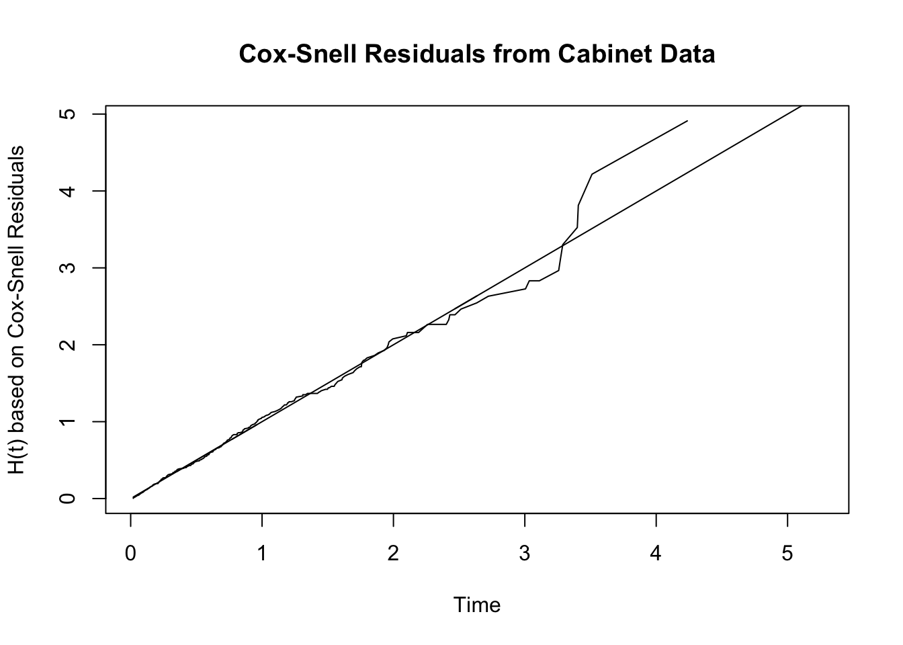
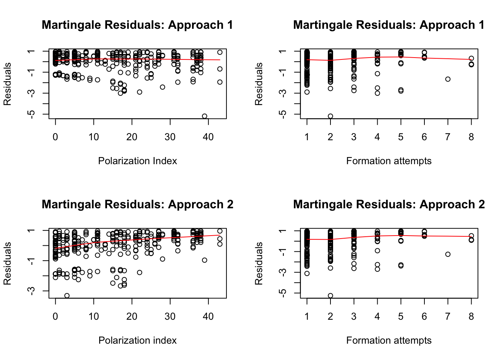
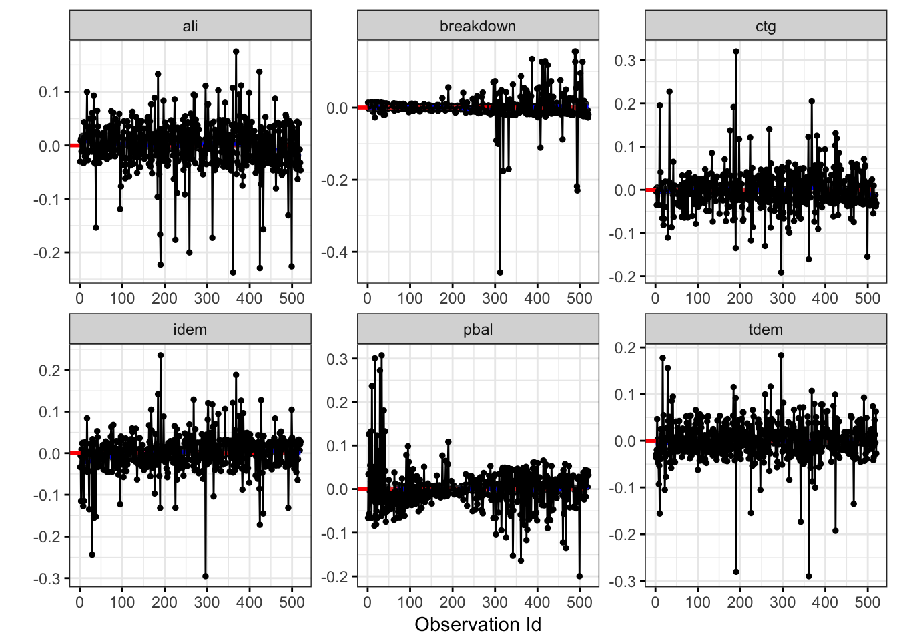
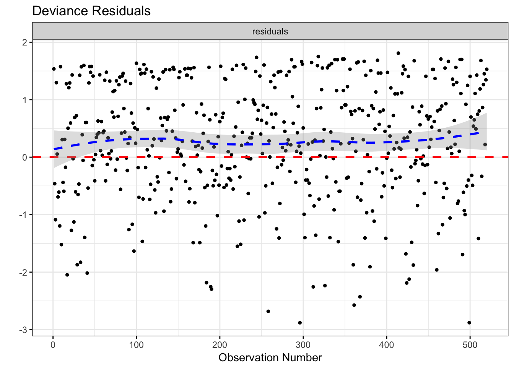

8 Diagnostic Methods for the Event History Model
This chapter makes use of the cabinet and international militarized interventions datasets used in previous chapters.
8.1 Cabinet Data in R
8.1.1 Figure 8.1
First we run the Cox model with the exact discrete approximation.
ed_mod <- coxph(dv ~ invest + polar + numst + format + postelec + caretakr,
data = cabinet, ties = "exact")We calculate the Cox-Snell residuals in the following way. Then we plot the residuals on the x-axis and the integrated hazard of the residuals on the y-axis, against a 45 degree line that serves as a reference line. If the model holds, the plot of the residuals agianst the integrated hazard should fall roughly on that line.
# First we calculate Martingale residuals
ed_resid <- resid(ed_mod, type="martingale")
# We subtract these residuals from the actual values of the event to get the
# Cox-snell residuals.
ed_res <- cabinet$'_d' - ed_resid
# Compute S(t)
ed_surv <- survfit(Surv(ed_res,cabinet$'_d')~1)
# Plot the integrated hazard function, which is H(t) = -log(S(t)), on the y-axis
plot(ed_surv$time, -log(ed_surv$surv), type = "l", xlab="Time",
ylab = "H(t) based on Cox-Snell Residuals", main="Cox-Snell Residuals from Cabinet Data")
lines(ed_res, ed_res, type = "l")
8.1.2 Figure 8.2
We estimate the models that will be used for the figure and calculate their Martingale residuals. The goal is to assess the functional form of particular covariates. For example, can we assume that it is linear or are adjustments necessary?
# The model for the top two panels of the figure.
mgale_mod <- coxph(dv ~ format + polar, data = cabinet, ties = "exact")
# This model only has polarization covariate and will be used for the bottom right panel
polar_mod <- coxph(dv ~ polar, data = cabinet)
# This model only has the formation attempts covariate, and will be used for the bottom left panel.
format_mod <- coxph(dv ~ format, data = cabinet, ties = "exact")
# Calculate Martingale residuals for each model
mgale_mod_resid <- resid(mgale_mod,type='martingale')
polar_mod_resid <- resid(polar_mod,type='martingale')
format_mod_resid <- resid(format_mod,type='martingale')Now we are ready to plot. In all four panels, we plot the martingale residuals and the smoothed residuals using lowess against either the polarization and formation attempts covariates. The top two panels are based on a Cox model that includes both covoriates, the bottom right panel uses only the polarization covariate, and the bottom left panel uses only the formation attempts variable. In all four plots, we see mostly flat lines centered around 0, which indicates that no adjustments need to be made to the functional form
par(mfrow=c(2,2))
# Plot Martingale residuals against the polarization covariate
plot(cabinet$polar, mgale_mod_resid, xlab="Polarization Index",
ylab = "Residuals", main="Martingale Residuals: Approach 1")
lines(lowess(cabinet$polar, mgale_mod_resid),col='red')
# Plot Martingale residuals against the formation attempts covariate
plot(cabinet$format, mgale_mod_resid, xlab="Formation attempts",
ylab = "Residuals", main="Martingale Residuals: Approach 1")
lines(lowess(cabinet$format, mgale_mod_resid),col='red')
# Plot Martingale residuals against the polarization covariate
plot(cabinet$polar, format_mod_resid, xlab="Polarization index",
ylab = "Residuals", main="Martingale Residuals: Approach 2")
lines(lowess(cabinet$polar, format_mod_resid),col='red')
# Plot Martingale residuals against the polarization covariate
plot(cabinet$format, polar_mod_resid, xlab="Formation attempts",
ylab = "Residuals", main="Martingale Residuals: Approach 2")
lines(lowess(cabinet$format, polar_mod_resid),col='red')
8.2 Cabinet Data in Stata
8.2.1 Figure 8.1
First we run the Cox model with the exact discrete approximation and compute the martingale residuals.
stcox invest polar numst format postelec caretakr, exactm nohr mgale(martingale) We calculate the Cox-Snell residuals in the following way.
*Use predict to derive Cox-Snell residuals*
predict CoxSnell, csnell
*Re-stset the data to treat the Cox-Snell residuals as "the data" (i.e. the time variable)*
stset CoxSnell, fail(censor)
*Generate the K-M estimates for the new data*
sts generate km=sThen we plot the the residuals on the x-axis and the integrated hazard oof the residuals on the y-axis, against a 45 degree line that serves as a reference line. If the model holds, the plot of the residuals agianst the integrated hazard should fall roughly on that line.
*Generate the integrated hazard (using double option for increased computer precision)*
gen double H_cs=-log(km)
*Reset working directory to output folder
cd ~/Dropbox/github/liwu-gan.github.io/chapter8
twoway (line H_cs CoxSnell, sort) (line CoxSnell CoxSnell, sort lpattern(solid)), ///
legend(off) ///
xtitle("Cox-Snell Residuals from Cabinet Data") ///
title("H(t) based on Cox-Snell Residuals", position(11)) ///
scheme(s2mono) graphregion(color(white) icolor(none)) ///
saving(ch8_coxsnellcab.gph, replace)
graph export ch8_coxsnellcab.png, replace8.2.2 Figure 8.2
Before plotting the martingale residuals on the polarization index and formation attempts variables, we drop the variables from our previous analysis and re-stset the data.
*Drop previous data
drop martingale CoxSnell H_cs km
*Resetting the data to original form*
stset durat, fail(censor)We start with estimating the model for Approach 1.
* Estimate model of interest
stcox format polar, exactp nohr mgale(mg) Then we can plot the martingales and lowess term against either the polarization or formation attempts covoriate (Approach 1).
twoway (scatter mg polar, sort mfcolor(white) mlcolor(black)) (lowess mg polar, sort lpattern(solid)), ///
legend(off) ///
xtitle("Polarization Index") ///
title("Martingale Residuals: Approach 1", position(11)) ///
scheme(s2mono) graphregion(color(white) icolor(none)) ///
saving(ch8_polarff1.gph, replace)
twoway (scatter mg format, sort mfcolor(white) mlcolor(black)) (lowess mg format, sort lpattern(solid)), ///
legend(off) ///
xtitle("Formation Attempts") ///
title("Martingale Residuals: Approach 1", position(11)) ///
scheme(s2mono) graphregion(color(white) icolor(none)) ///
saving(ch8_formatff1.gph, replace)
drop mgNow we run two different models, one with only the formation attempts covariate and the other with only the polarization index covariate. From the first model, we plot the Martingale residuals and the smoothed residuals against the polarization variable while in the second, we plot the residuals against the formation attempts covariate.
* First estimate submodel
stcox format, exactp nohr mgale(mg)
* Plot of martingales vs. polarization variable with lowess term
twoway (scatter mg polar, sort mfcolor(white) mlcolor(black)) (lowess mg polar, sort lpattern(solid)), ///
legend(off) ///
xtitle("Polarization Index") ///
title("Martingale Residuals: Approach 2", position(11)) ///
scheme(s2mono) graphregion(color(white) icolor(none)) ///
saving(ch8_polarff2.gph, replace)
drop mg
* Now test for functional form of formation attempts
stcox polar, exactp nohr mgale(mg)
* Plot of martingales vs. formation attempts variable with lowess term
twoway (scatter mg format, sort mfcolor(white) mlcolor(black)) (lowess mg format, sort lpattern(solid)), ///
legend(off) ///
xtitle("Formation Attempts") ///
title("Martingale Residuals: Approach 2", position(11)) ///
scheme(s2mono) graphregion(color(white) icolor(none)) ///
saving(ch8_formatff2.gph, replace)
drop mgWe combine all four graphs. In all four plots, we see mostly flat lines centered around 0, which indicates that no adjustments need to be made to the functional form
graph combine ch8_polarff1.gph ch8_formatff1.gph ch8_polarff2.gph ///
ch8_formatff2.gph, graphregion(color(white) ///
icolor(none)) saving(ch8_funcformcab.gph, replace)
graph export ch8_funcformcab.png, replace8.2.3 Figure 8.6
We want to plot the Cox-snell residuals on the x-axis and the integrated hazard function on the y-axis for a variety of parametric models. Let’s start with the exponential.
streg invest polar numst format postelec caretakr, dist(exp) time
*Now compute Cox-Snell residuals*
predict double cs, csnell
*Now restset the data*
stset cs, failure(censor)
*Now generate K-M estimates*
sts generate km=s
*Back out the estimated cumulative hazard:*
gen double H=-log(km)
*Graph functions*
twoway (line H cs, sort) (line cs cs, sort lpattern(solid)), ///
legend(off) ///
xtitle("Exponential Model") ///
title("H(t) based on Cox-Snell Residuals", position(11)) ///
scheme(s2mono) graphregion(color(white) icolor(none)) ///
saving(ch8_coxsnellexp.gph, replace)
drop H cs km
stset durat, fail(censor)Let’s estimate the Weibull next and calculate the Cox-snell residuals and integrated hazard.
streg invest polar numst format postelec caretakr, dist(weibull) time
*Now compute Cox-Snell residuals*
predict double cs, csnell
*Now restset the data*
stset cs, failure(censor)
*Now generate K-M estimates*
sts generate km=s
*Back out the estimated cumulative hazard:*
gen double H=-log(km)
*Graph functions*
twoway (line H cs, sort) (line cs cs, sort lpattern(solid)), ///
legend(off) ///
xtitle("Weibull Model") ///
title("H(t) based on Cox-Snell Residuals", position(11)) ///
scheme(s2mono) graphregion(color(white) icolor(none)) ///
saving(ch8_coxsnellweib.gph, replace)
drop H cs km
stset durat, fail(censor)We do the same for the log-log model.
streg invest polar numst format postelec caretakr, dist(loglog)
*Now compute Cox-Snell residuals*
predict double cs, csnell
*Now restset the data*
stset cs, failure(censor)
*Now generate K-M estimates*
sts generate km=s
*Back out the estimated cumulative hazard:*
gen double H=-log(km)
*Graph functions*
twoway (line H cs, sort) (line cs cs, sort lpattern(solid)), ///
legend(off) ///
xtitle("Log-Logistic Model") ///
title("H(t) based on Cox-Snell Residuals", position(11)) ///
scheme(s2mono) graphregion(color(white) icolor(none)) ///
saving(ch8_coxsnellll.gph, replace)
drop H cs km
stset durat, fail(censor)The log-normal model is next.
streg invest polar numst format postelec caretakr, dist(lognorm) time
*Now compute Cox-Snell residuals*
predict double cs, csnell
*Now restset the data*
stset cs, failure(censor)
*Now generate K-M estimates*
sts generate km=s
*Back out the estimated cumulative hazard:*
gen double H=-log(km)
*Graph functions*
twoway (line H cs, sort) (line cs cs, sort lpattern(solid)), ///
legend(off) ///
xtitle("Log-Normal Model") ///
title("H(t) based on Cox-Snell Residuals", position(11)) ///
scheme(s2mono) graphregion(color(white) icolor(none)) ///
saving(ch8_coxsnellln.gph, replace)
drop H cs km
stset durat, fail(censor)Here is the gompertz model.
streg invest polar numst format postelec caretakr, dist(gompertz) nohr
*Now compute Cox-Snell residuals*
predict double cs, csnell
*Now restset the data*
stset cs, failure(censor)
*Now generate K-M estimates*
sts generate km=s
*Back out the estimated cumulative hazard:*
gen double H=-log(km)
*Graph functions*
twoway (line H cs, sort) (line cs cs, sort lpattern(solid)), ///
legend(off) ///
xtitle("Gompertz Model") ///
title("H(t) based on Cox-Snell Residuals", position(11)) ///
scheme(s2mono) graphregion(color(white) icolor(none)) ///
saving(ch8_coxsnellgomp.gph, replace)
drop H cs km
stset durat, fail(censor)Lastly, here is the generalized gamma model.
streg invest polar numst format postelec caretakr, dist(ggamma) time
*Now compute Cox-Snell residuals*
predict double cs, csnell
*Now restset the data*
stset cs, failure(censor)
*Now generate K-M estimates*
sts generate km=s
*Back out the estimated cumulative hazard:*
gen double H=-log(km)
*Graph functions*
twoway (line H cs, sort) (line cs cs, sort lpattern(solid)), ///
legend(off) ///
xtitle("Generalized Gamma Model") ///
title("H(t) based on Cox-Snell Residuals", position(11)) ///
scheme(s2mono) graphregion(color(white) icolor(none)) ///
saving(ch8_coxsnellgg.gph, replace)
drop H cs km We can combine all six graphs.
graph combine ch8_coxsnellexp.gph ch8_coxsnellweib.gph ch8_coxsnellll.gph ///
ch8_coxsnellln.gph ch8_coxsnellgomp.gph ch8_coxsnellgg.gph, col(2) graphregion(color(white) ///
icolor(none)) saving(ch8_coxsnellparm.gph, replace)
graph export ch8_coxsnellparm.png, replace8.3 Militarized Interventions Data in R
Let’s load the dataset and prepare the survival object.
#-------Dataset
imi <- read.dta("~/Dropbox/github/liwu-gan.github.io/dta/omifinal.dta")
#-------Data prepation
names(imi)[names(imi) == 'break'] <- 'breakdown'
# Create survival object for dv
#dv <- Surv(imi$'_t', imi$'_d')
dv <- Surv(imi$'_t0', imi$'_t', imi$'_d')8.3.1 Figure 8.3
After running a Cox model (note that we are running the model with the Efron approximation because the exact discrete method used in Stata and in the book takes much longer to run), we want to assess whether any observations are exerting influence on the coefficient estimates. We can calculate the dfbeta residuals directly in R using the ggcoxdiagnostics command in the survminer package. The dfbeta residuals capture ``the estimated changes in the regression coefficients upon deleting each observation in turn."
cox_mod <- coxph(dv ~ pbal + ctg + ali + idem + tdem + breakdown, data = imi)
ggcoxdiagnostics(cox_mod, type = "dfbetas", linear.predictions = FALSE, ylab = "") + geom_line()
8.3.2 Figure 8.4
To check the presence of outliers, we use the ggcoxdiagnostics command again to calculate the deviance residuals and plot them against the observation number. We also plotted the smoothed residuals using lowess for graphical purposes. What we want to see are the residuals distributed uniformly around 0. As the plot shows, there are some observations with very large negative residuals.
ggcoxdiagnostics(cox_mod, type = "deviance", linear.predictions = FALSE, ylab = "", xlab = "Observation Number", title = "Deviance Residuals")
8.4 Militarized Interventions Data in Stata
8.4.1 Figure 8.3
After running a Cox model, we want to assess whether any observations are exerting influence on the coefficient estimates. To do this, we create a matrix of score residuals and multiply it by the variance-covariance matrix generated from the Cox model. What we get is standard deviation changes to the estimates (called the dfbeta).
* Estimate a Cox model
stcox pbal idem tdem ctg ali break, nohr exactp esr(esr*)
* The esr(esr*) command tells Stata to compute three variables storing the values of the efficient score residuals (esr1 and esr2 and esr3)
* Next use Stata's matrix commands to generate an n x m matrix of score residuals
set matsize 800
mkmat esr1 esr2 esr3 esr4 esr5 esr6, matrix(score_residuals), if(e(sample))
* Now compute the var-cov matrix of beta
mat var_cov=e(V)
* and multiply the score residual matrix by the var-cov matrix to obtain the n x m matrix of scaled changes in the m coefficients
mat dfbeta=score_residuals*var_cov
* Now, we can name the columns, which will correspond to the influence values for the ith observation on the mth covariate
svmat dfbeta, names(x)
* For graphing purposes, we create a variable storing the observation number
gen obs=_n
* Also for display purposes, create a constant equal to 0
gen zero=0For each covariate, we plot the dfbetas by the observation number to check for influential observations. Deviations from 0 suggest influential observations. From the plots, none appear large in magnitude.
* Reset working directory to collect following output
cd ~/Dropbox/github/liwu-gan.github.io/chapter8
* Now we can graph them; for the power balance covariate, the graph command is
twoway (line x1 obs, sort) (line zero obs, sort), ///
legend(off) ///
xtitle("Observation Number") ///
title("Power Balance") ///
scheme(s2mono) graphregion(color(white) icolor(none)) ///
saving(ch8_influencepb.gph, replace)
* And for the intervenor democracy score
twoway (line x2 obs, sort) (line zero obs, sort), ///
legend(off) ///
xtitle("Observation Number") ///
title("Intervenor Democracy") ///
scheme(s2mono) graphregion(color(white) icolor(none)) ///
saving(ch8_influenceid.gph, replace)
* And for the target democracy score
twoway (line x3 obs, sort) (line zero obs, sort), ///
legend(off) ///
xtitle("Observation Number") ///
title("Target Democracy") ///
scheme(s2mono) graphregion(color(white) icolor(none)) ///
saving(ch8_influencetd.gph, replace)
* And for the contiguity status covariate
twoway (line x4 obs, sort) (line zero obs, sort), ///
legend(off) ///
xtitle("Observation Number") ///
title("Territorial Contiguity") ///
scheme(s2mono) graphregion(color(white) icolor(none)) ///
saving(ch8_influencec.gph, replace)
* And for the alliance status covariate
twoway (line x5 obs, sort) (line zero obs, sort), ///
legend(off) ///
xtitle("Observation Number") ///
title("Alliance") ///
scheme(s2mono) graphregion(color(white) icolor(none)) ///
saving(ch8_influencea.gph, replace)
* And for the government breakdown covariate
twoway (line x6 obs, sort) (line zero obs, sort), ///
legend(off) ///
xtitle("Observation Number") ///
title("Authority Breakdown") ///
scheme(s2mono) graphregion(color(white) icolor(none)) ///
saving(ch8_influenceb.gph, replace)
* Now we can combine all six graphs
graph combine ch8_influencepb.gph ch8_influenceid.gph ch8_influencetd.gph ///
ch8_influencec.gph ch8_influencea.gph ch8_influenceb.gph, graphregion(color(white) ///
icolor(none)) saving(ch8_influence.gph, replace)
* Export graph to .png file
graph export ch8_influence.png, replace8.4.2 Figure 8.4
We want to check the presence of outliers. The deviance residuals were calculated from a Cox model, and we plot the deviance residuals against the observation number. We also plotted the smoothed residuals using lowess for graphical purposes. What we want to see are the residuals distributed uniformly around 0. As the plot shows, there are some observations with very large negative residuals.
* Estimate Cox model and output martingale residuals
stcox ctg idem tdem pbal break ali, nohr exactp mgale(mg)
* Now, create deviance residuals using predict option
predict double deviance, deviance
* Ise ksm to graph deviance (using lowess)
twoway (scatter deviance obs, sort) (lowess deviance obs, sort) (line zero obs, sort), ///
legend(off) ///
xtitle("Observation Number") ///
title("Deviance Residuals") ///
scheme(s2mono) graphregion(color(white) icolor(none)) ///
saving(ch8_outliersomi.gph, replace)
* Export graph to .png file
graph export ch8_outliersomi.png, replace8.4.3 Figure 8.5
Here, the deviance residuals are plotted against duration times. We also include the smoothed residuals using lowess again. We can see that interventions which last for a long time tend to have large negative residuals. This suggests that for longer interventions, the probability of an intervention terminating is overestimated by the Cox model.
twoway (scatter deviance durmths, sort) (lowess deviance durmths, sort) (line zero durmths, sort), ///
legend(off) ///
xtitle("Duration of Militarized Intervention") ///
title("Deviance Residuals") ///
scheme(s2mono) graphregion(color(white) icolor(none)) ///
saving(ch8_outliersomi2.gph, replace)
*Export graph to .png file
graph export ch8_outliersomi2.png, replace